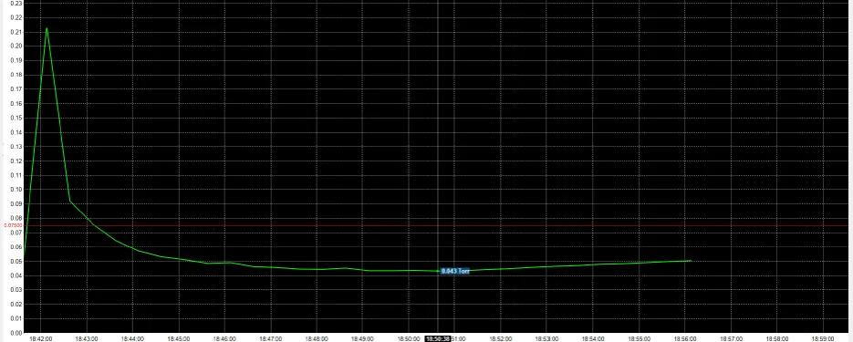

PROJECT 01
Professional portfolio
Vacuum monitoring
Troubleshooting
Refrigerator cooling-circuit vacuum system
0.043 Torr
observed curve value
0.075 Torr
reference limit shown
Scope. Monitoring, upgrading and troubleshooting the cooling-circuit vacuum system. The supplied curve shows a 0.043 Torr value against a displayed 0.075 Torr reference limit.
Note. The values describe the supplied captured curve, not a claim of long-term process capability.
Professional experience